自适应时序
根据动作变化学习事件边界，把更多表示能力分配给接触与转换阶段，把稳定运动压缩为更长事件。
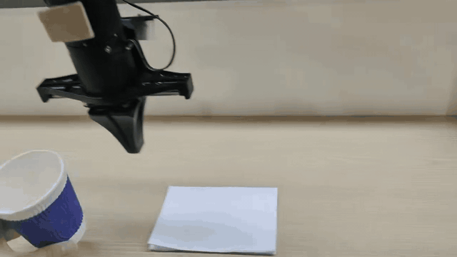
GENERALIST EMBODIED INTELLIGENCE
通用具身智能模型
以可变时长事件为动作的基本单元，让视觉、语言与连续控制在一个紧凑模型中协同工作。HEAT 与 Continuous-HEAT 在同一事件动作框架下，以两种接口实现面向机器人操作的精细控制。
METAWORLD MT50 EVALUATION
评测覆盖
SHARED EVENT-ACTION FRAMEWORK
一次操作天然由若干持续时间不同的事件构成：接近、接触、抓取、搬运与放置。共享框架先学习事件边界与时长，再由 HEAT 或 Continuous-HEAT 接口保留真实执行所需的连续精度。
根据动作变化学习事件边界，把更多表示能力分配给接触与转换阶段，把稳定运动压缩为更长事件。
HEAT 采用离散 token 与连续残差，Continuous-HEAT 采用连续事件潜变量；二者共享事件语义与持续时间建模。
先预测完整事件计划，再只执行前几个动作并重新观察环境，降低接触误差与环境变化的累积影响。
MODEL ARCHITECTURE
当前模型以 0.8B 多模态主干承接视觉、语言、机器人状态与本体信息，接入事件接口与动作头后，完整参数规模约为 1B。当前 0.8B 主干采用 Qwen3.5 实现；模型的关键设计位于其上的事件动作接口与连续动作生成模块。3B 全自研主干版本也即将推出。
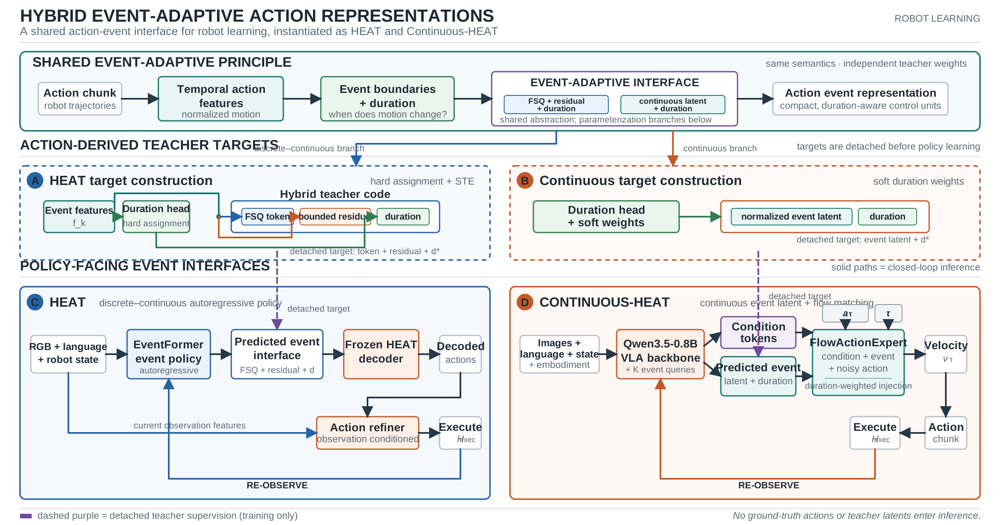
ONE FRAMEWORK / TWO INTERFACES
两种路线共享事件语义与持续时间建模，只在面向策略的事件接口上采用不同参数化方式，并共同服务于紧凑表征、多任务泛化与闭环控制。
把连续动作块转化为紧凑、具备持续时间感知的控制单元；训练阶段由动作派生教师提供监督，推理阶段只依赖当前多模态观察。
以 FSQ 离散 token 表达事件身份，以有界连续残差保留度量细节，并显式预测事件持续时间。
保留相同的事件语义与时间抽象，以归一化连续事件潜变量为 Flow Matching 动作生成提供条件。
CONTINUOUS-HEAT / MATCHED CONTROL
每组实验都保持数据、骨干、优化器、流积分步数与执行时域一致。
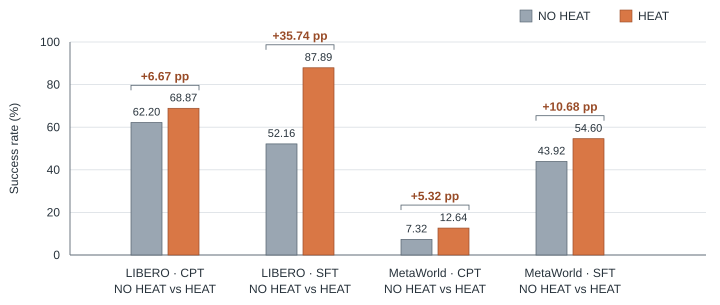
DISCRETE HEAT / EVENTFORMER
离散版 HEAT 用 8 个可变时长事件表示 32 帧动作，每个事件由 FSQ token、连续残差与显式时长组成，再由 EventFormer 自回归预测并以短时域闭环执行。
HEAT EventFormer 在论文列出的三组基准中均达到相应表格的最高平均成功率。
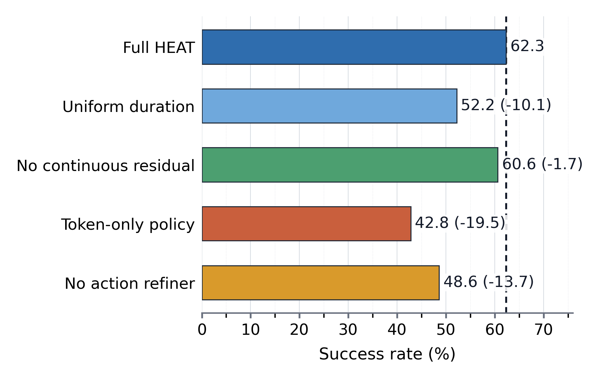
WHAT MATTERS
消融结果把增益拆到具体组件：离散 token 提供事件身份，连续分支保留度量细节，预测时长与动作修正器负责将紧凑计划可靠地还原为控制轨迹。
DATA ENGINE
训练管线统一整理 16 组 LeRobot v3 数据目录，覆盖不同动作维度、相机数量与采集频率，为视觉语言动作模型提供异构训练语料。
OXE 与 RoboCasa 合计占已存储帧数的 88.4%。训练前通过统一 schema 对齐图像、语言、动作、状态与本体描述。
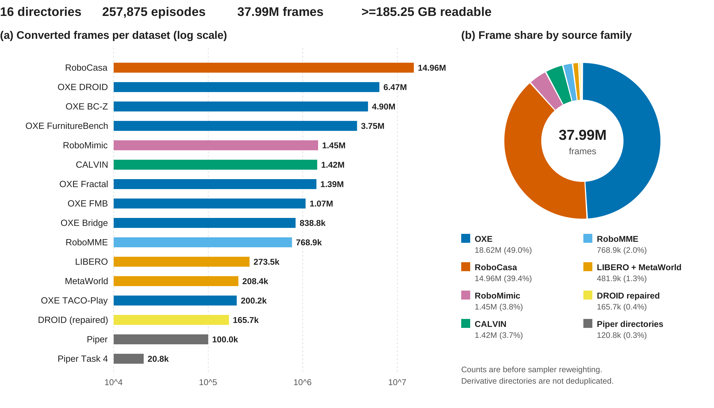
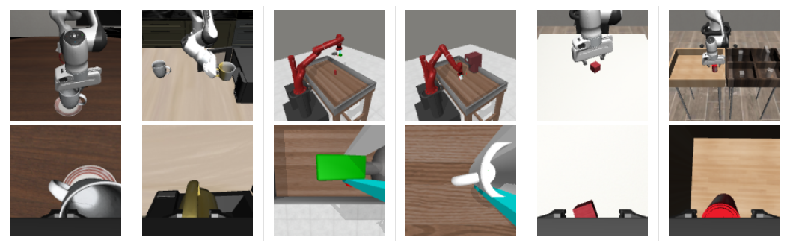
ROBOT IN MOTION
操作能力在不同环境中接受验证。真机实验展示视觉条件下的抓取与搬运；仿真任务覆盖接触、路径规划、容器操作与长序列任务。
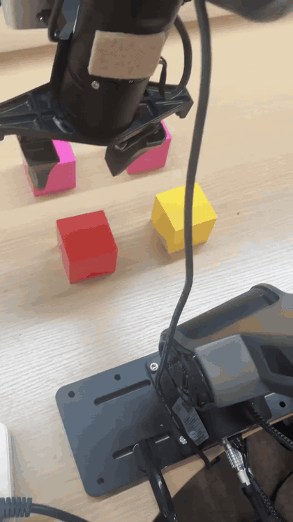
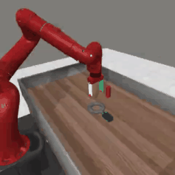
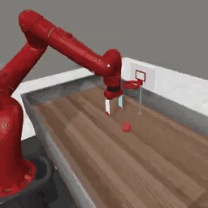
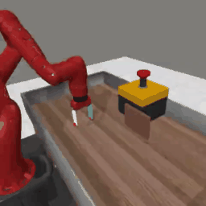
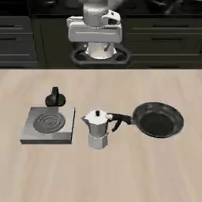
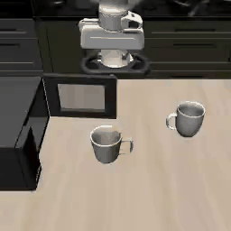
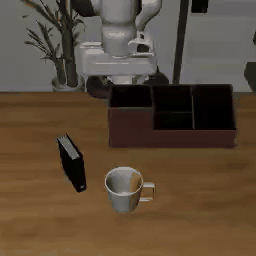